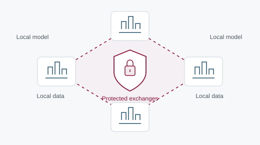

Real-time AI-powered monitoring for energy-efficient scheduling in multi-node heterogeneous systems
AI-powered monitoring for energy-aware task scheduling across heterogeneous computing nodes.
Future Generation Computer SystemsRead on ORBI
University of Mons · ILIA
At SMART’ILIA, we develop artificial intelligence and computer vision methods for medical imaging, connected agriculture and distributed systems.
Faculty of Engineering Informatique, Logiciel et Intelligence artificielle

Bringing brain imaging and clinical data together, with evaluation across independent cohorts.

Combining sensors, satellite imagery and weather data to support agricultural decisions.

Exploring blockchain and multi-party computation for secure, decentralised federated learning.
Research output
Recent work in medical AI, connected systems and distributed computing.
AI-powered monitoring for energy-aware task scheduling across heterogeneous computing nodes.
Evaluating missing-data methods through accuracy, temporal consistency and demographic fairness in Parkinson’s research.
A survey of AI-based security approaches for devices in the Internet of Medical Things.
Combining 3D MRI and clinical data with transformers for Alzheimer’s classification across independent cohorts.
Selection verified against UMONS / ORBI records on .
Research in practice
Health · AI4BRAIN
Medical imaging and machine learning for research into neurological and psychiatric disorders.
Discover the researchAgriculture · WalleSmart
A cloud platform bringing field sensors, satellite imagery and weather data together for smart farming.
Discover the platformSecurity · SecureBFL
Decentralised federated learning with blockchain and multi-party computation for model exchanges.
Read the researchDiagrams illustrate research approaches; they are not experimental results.
Our people
Faculty, researchers and PhD students bringing together expertise in AI, image analysis and intelligent systems.
Meet the whole teamCollaborate with SMART’ILIA
For research collaborations, student projects and enquiries, get in touch with our team at the University of Mons.
Contact the labUniversity of Mons
Faculty of Engineering · ILIA